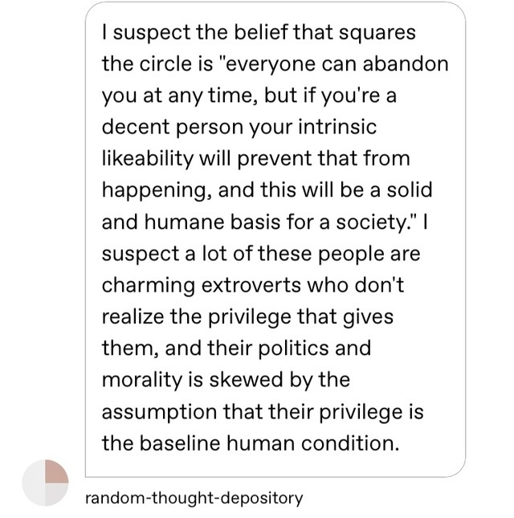

People who are into relationship anarchy tend to be the same people who are into communes and intentional communities and general resource-sharing. Which is fine on paper, but in practice, I’m skeptical that “everyone depends on everyone else for their basic needs” and “you can abandon anyone at any time” can ever be compatible positions. Surely they realize that any kind of communal living would require *more* interpersonal commitment, not less?

That’s the “charitable” “steelmanned” version of the idea.
The other version of the idea is something like:
The threat of being abandoned by the people on whom you’re dependent is the thing that keeps you on the straight-and-narrow path of decent behavior, and thus the glue that holds society together.
(The problem with atomized modernity is that small-scale personal politics don’t have enough coercive power; people are shits to each other because the only ones on whom they’re dependent, the only ones whom they really have to work to please, are their employers.)
This is of course the very worst idea, but if you scratch the surface I imagine you’ll find that it’s surprisingly popular.